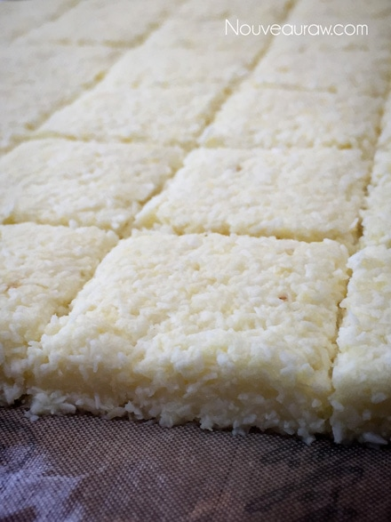
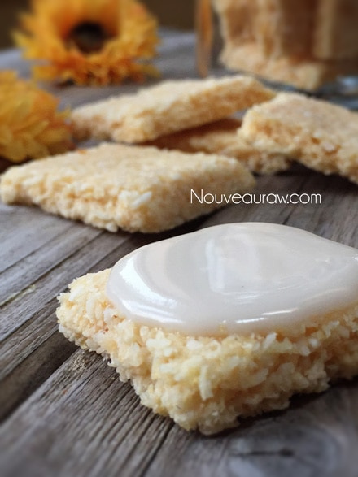

Coconut Pineapple Crackers
– raw, vegan, gluten-free, nut-free –
I love fresh pineapple, but have you ever had the feeling that it doesn’t exactly love you back? After enjoying a fresh, juicy, sweet pineapple… do you sometimes experience a burning or an itchy sensation in your mouth? Or even do your lips become itchy or even sore? I have, and it scared me! Was I allergic? Oh, no’s! Not my precious pineapple! The fact was… I wasn’t. It all has to do with a little enzyme called…
Again, as I just mentioned, it is an enzyme, one that digests protein. Pineapple is one of the richest sources of bromelain in the world. Luckily there are ways to minimize these reactions in your mouth. Before you eat some pineapple, cut out the core since most of the enzyme is located in the stem of the fruit. Truth be told, Bromelain is like a natural medicine; it can work as an anti-inflammatory and anti-swelling agent. In fact, there are many excellent health benefits to it. Click (here or here) to read more about it.
Heartburn?
There is a chance that if you have gastroesophageal reflux disease or GERD, you may have a difficult time tolerating pineapple. This part doesn’t have anything to do with Bromelain, pineapple definitely increases the acidity of your stomach, which may intensify the pain you feel in your esophagus from the reflux. Just something to be aware of.
Why I added Himalayan pink salt
If you scanned through the ingredients list… all four of them (hehe), you will have noticed that I add salt to this sweet cracker. But then, I often add Himalayan (not table salt) to my recipes. Salt will enhance the sweet flavor of the fruit, if already sweet, which alters its acidic taste. But don’t expect it to work miracles and make a flavorless pineapple taste amazingly sweet and ripe.
To learn more about how pineapples grow and how they are harvested, check out (this) post that I wrote up. blessings, amie sue
yields 36 crackers (1- 1 /2″ square)
- 2 cups (340 g) diced pineapple
- 1 Tbsp raw agave or maple syrup
- 1 /4 tsp Himalayan pink salt
- 3 cups shredded coconut
Preparation:
- Process the pineapple, sweetener (if used), and salt in a food processor, fitted with the “S” blade, until creamy.
- Cutting up a pineapple can be as intimidating as sitting on a porcupine. Ever sat on one? Me either, but one can only imagine. Click (here) to learn how. (To cut up a pineapple, not sit on a porcupine)
- I used organic, frozen pineapple chunks that were thawed.
- Add shredded coconut and process till mixed.
- Line the dehydrator tray with a non-stick teflex sheet.
- Spread the batter into a large square.
- Make sure that you spread it evenly, so it dries evenly.
- Score the crackers into desired shapes and sizes. You can use a pizza cutter or a long metal ruler to create the score marks.
- Dehydrate at 145 degrees (F) for 1 hour, then reduce to 115 degrees (F) and continue drying for up to 24 hours… until dry and crispy.
- Snap apart and let cool before storing in an airtight bag/container.
- They should last several weeks in the pantry and can be frozen for 1-2 months. If they start to soften due to humidity, throw them back in the dehydrator to crisp up.
- For Friday night excitement (lol), I place a teaspoon of softened coconut butter on the crackers. Delicious!
Culinary Explanations:
- Why do I start the dehydrator at 145 degrees (F)? Click (here) to learn the reason behind this.
- When working with fresh ingredients, it is essential to taste test as you build a recipe. Learn why (here).
- Don’t own a dehydrator? Learn how to use your oven (here). I do, however honestly believe that it is a worthwhile investment. Click (here) to learn what I use.


© AmieSue.com